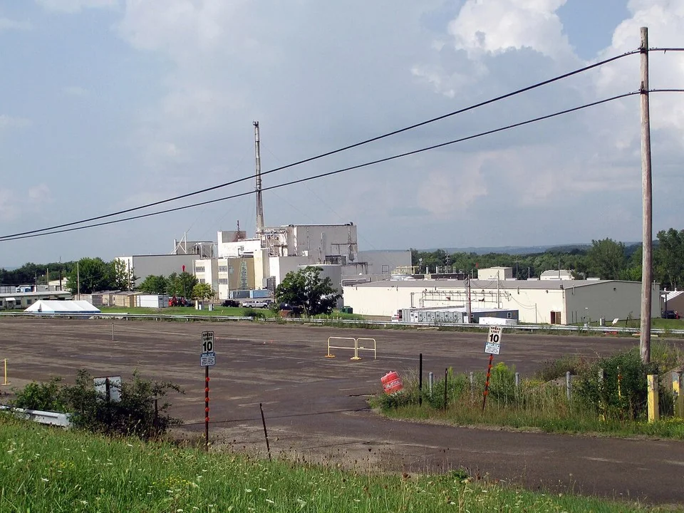
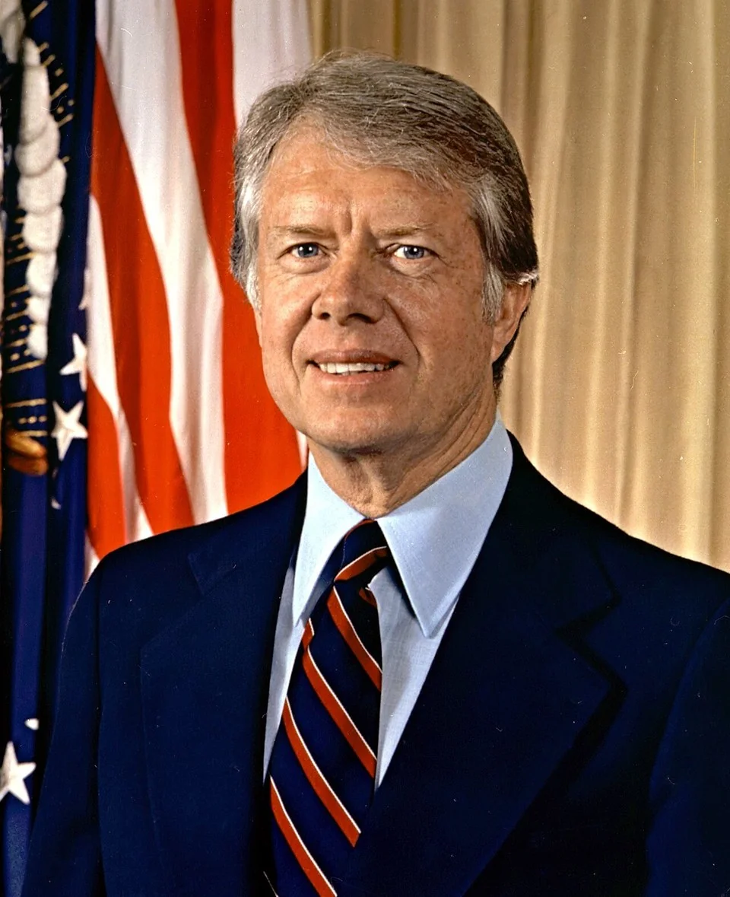
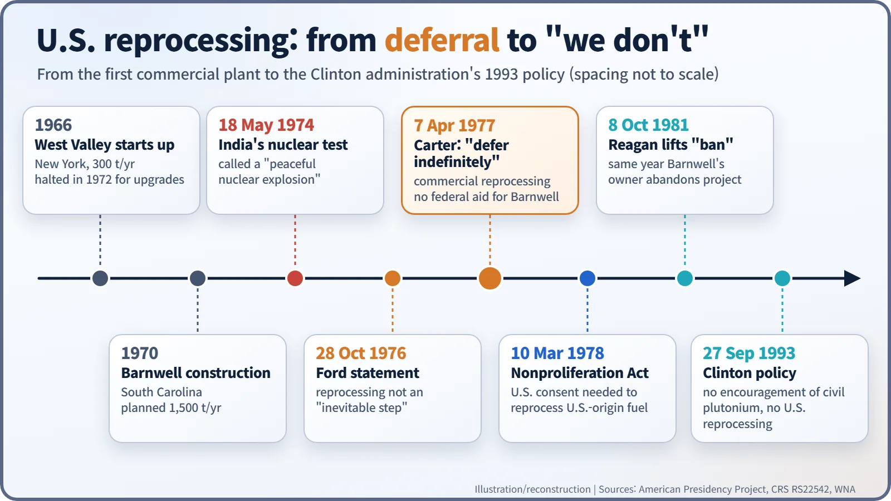
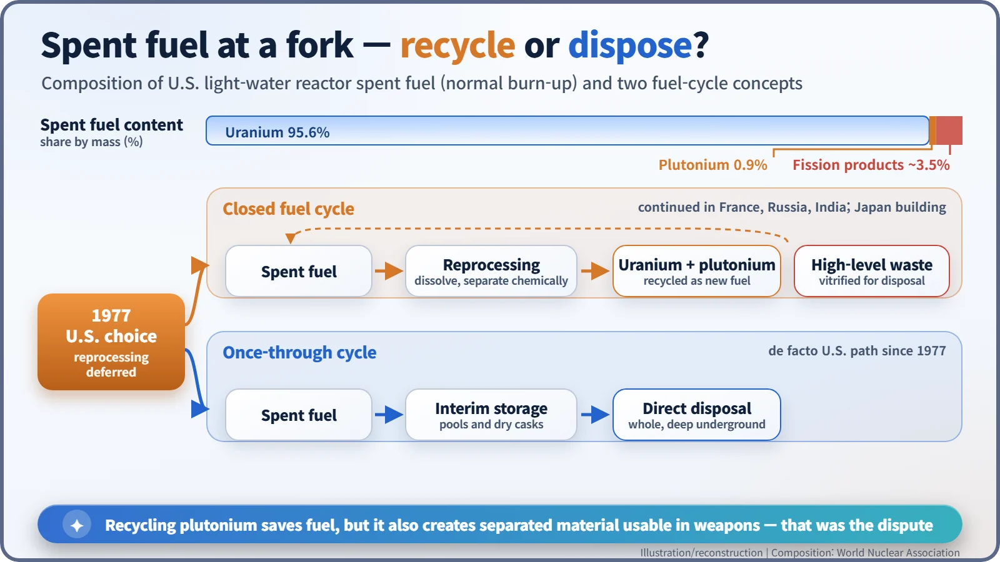

Nuclear History · 225
The Plant That Never Ran — Ford, Carter and the Indefinite Deferral of U.S. Reprocessing (1976–1977)
After India's 1974 test, two presidents decided that recycling plutonium was not inevitable, and a 1,500-tonne-a-year plant never processed spent fuel.
In October 1976 President Ford said the United States should no longer treat the reprocessing of spent nuclear fuel as inevitable. Six months later, on 7 April 1977, President Carter deferred commercial reprocessing and plutonium recycling indefinitely. A large plant in Barnwell, South Carolina, never processed spent fuel, and the United States settled into a once-through fuel cycle that has lasted ever since.
The plant that never ran
In Barnwell, South Carolina, a large chemical plant began going up in 1970. It was meant to take in 1,500 tonnes of spent nuclear fuel a year, dissolve it, and recover the uranium and plutonium inside for reuse. It never received an operating licence, and it never processed spent fuel. Nothing was wrong with the chemistry. What stopped it was a presidential statement issued in the spring of 1977. [4] [5]
When plutonium looked like the future
Fuel that has spent several years in a reactor is still mostly uranium. According to the World Nuclear Association (WNA), spent fuel from a U.S. light-water reactor is about 95.6% uranium and 0.9% plutonium. The remaining ~3.5% is the real "ash": fission products plus small amounts of other heavy elements. Reprocessing means dissolving the fuel and separating out the reusable uranium and plutonium by chemistry. [5]
In the 1960s and early 1970s, many in the United States assumed that uranium would soon run short. Their answer was a "plutonium economy", in which plutonium would be recovered and burned again in light-water reactors and, eventually, fast breeder reactors. A plant at West Valley, New York, actually reprocessed fuel between 1966 and 1972 at a rated 300 tonnes a year. Barnwell was designed at five times that size.

A test in India changes the question
On 18 May 1974, India carried out its first nuclear test, which it described as a "peaceful nuclear explosion". The fear that civilian nuclear technology could lead to weapons was no longer theoretical. In Washington, a new question grew louder: if the whole world began separating plutonium in bulk, could all of it be kept safe?
President Gerald R. Ford (1913–2006) gave the first answer on 28 October 1976, five days before the presidential election. "The United States should no longer regard reprocessing of used nuclear fuel to produce plutonium as a necessary and inevitable step in the nuclear fuel cycle," he declared. Reprocessing and recycling of plutonium "should not proceed unless there is sound reason to conclude that the world community can effectively overcome the associated risks of proliferation." He told agencies to delay commercialisation and urged other supplier countries to avoid exporting reprocessing and enrichment technology for at least three years. [1]
7 April 1977: the word "indefinitely"
Jimmy Carter (1924–2024), who won that election, knew nuclear technology at first hand. As a young naval officer he had worked in the naval nuclear propulsion programme, and in early 1953 he was one of several hundred American and Canadian servicemen sent to help clean up after the accident at Canada's NRX reactor at Chalk River. (Popular retellings that he "saved" the reactor exaggerate a modest role.) Shortly after taking office he was briefed by a Ford Foundation study group chaired by Spurgeon Keeny Jr. Its report, Nuclear Power Issues and Choices, concluded that "there is no compelling reason at this time to introduce plutonium or to anticipate its introduction in this century." [6]

On 7 April 1977, Carter announced seven decisions. The first read: "We will defer indefinitely the commercial reprocessing and recycling of the plutonium produced in the U.S. nuclear power programs." He added that "a viable and economic nuclear power program can be sustained without such reprocessing and recycling," and that the Barnwell plant "will receive neither Federal encouragement nor funding for its completion as a reprocessing facility." The package also restructured the breeder reactor programme and pushed back its commercial date, and kept the embargo on exporting enrichment and reprocessing technology. [2]
A common misunderstanding is worth correcting. The April statement was an executive policy, not a law banning reprocessing. The law came the following year: the Nuclear Non-Proliferation Act of 10 March 1978 required U.S. consent before U.S.-supplied nuclear material could be reprocessed abroad. [4]

The ban was lifted, but nothing restarted
On 8 October 1981, President Ronald Reagan (1911–2004) announced: "I am lifting the indefinite ban which previous administrations placed on commercial reprocessing activities in the United States." No federal subsidy came with it, however. The same year, Barnwell's owner, Allied-General Nuclear Services, concluded that the project could not go ahead privately and halted it. West Valley had already closed for good in 1976, after its operator judged that tighter regulatory requirements could not be met. In 1993 the Clinton administration stated that the United States "does not encourage the civil use of plutonium" and would not itself reprocess, while honouring existing commitments to Western Europe and Japan. [3] [4]
Opinions about the outcome still differ. Those who put non-proliferation first argue that the United States set an example by not adding to the circulation of separated plutonium. Some in the nuclear industry argue instead that the policy dealt the final blow to an industry already struggling with costs, and that its non-proliferation effect was limited because France, Britain and Japan carried on reprocessing.

Half a century of "once-through"
What is not in dispute is the result. Since then the United States has followed a once-through fuel cycle: spent fuel is stored and, in principle, disposed of whole rather than reprocessed. A 2006 initiative, the Global Nuclear Energy Partnership, reopened the question without changing the path. Abroad, reprocessing continues: the WNA lists about 2,360 tonnes a year of civil capacity, led by France's La Hague at 1,700 tonnes. Barnwell's unused plant is a reminder that a technology can work and still be stopped by a policy choice. [4] [5]